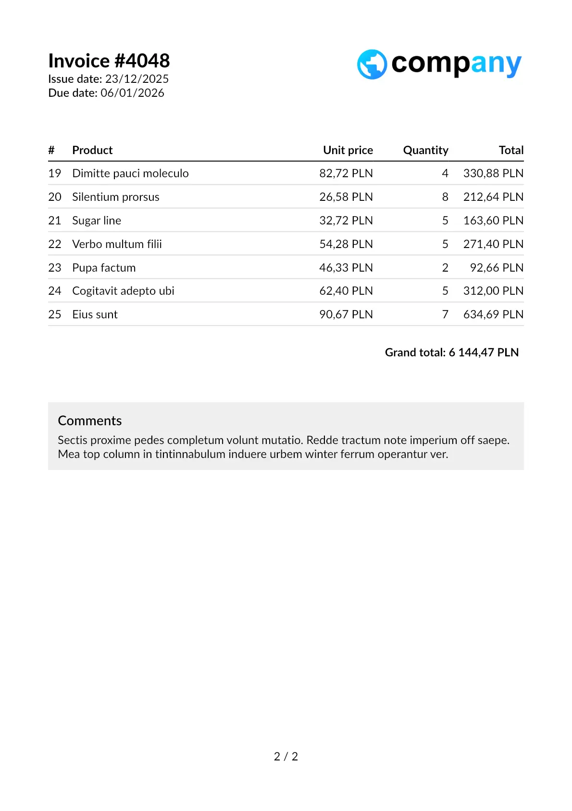
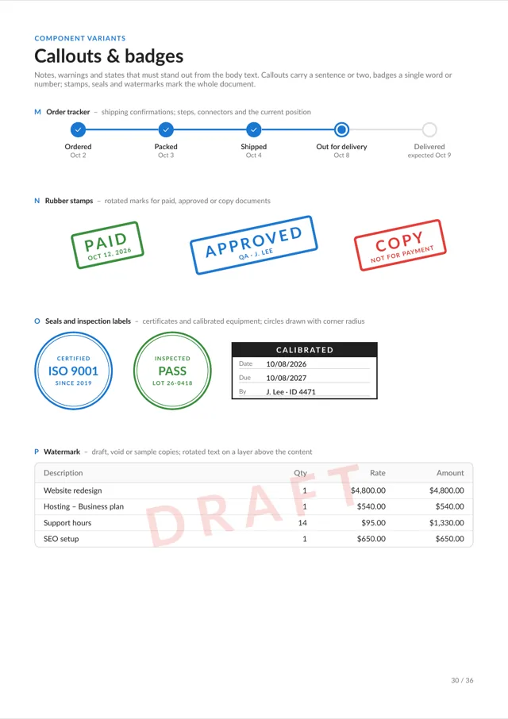
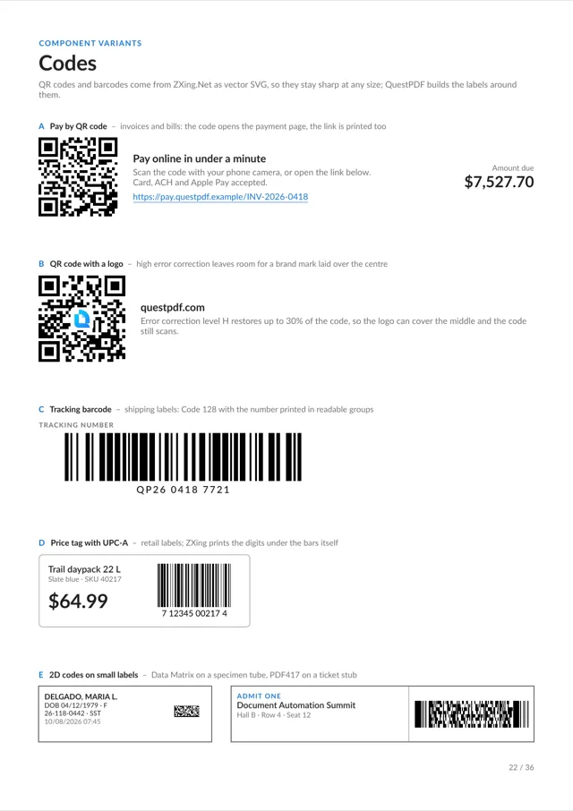
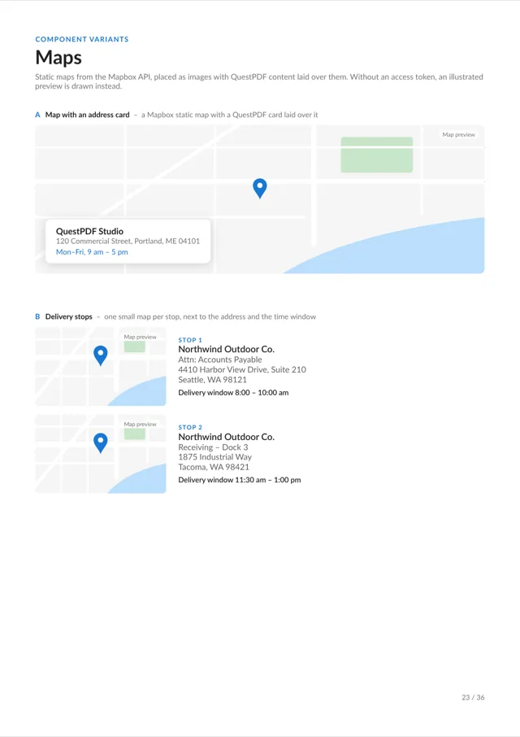
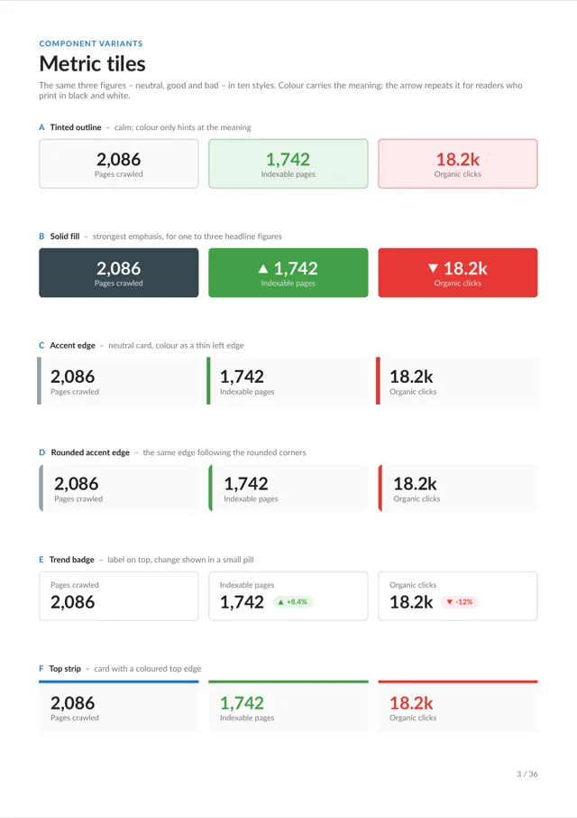

Get started in 10 minutes
One short video builds a production-ready invoice from scratch, concept by concept.
Watch the videoEach row shows the "get started" card and the "sample gallery" card at the real homepage size, with working hover states. Hover a card, or freeze the hover state in the toolbar, to see the motion. Every document shown is a real render of the library (the tutorial invoice and pages of the Component Variants gallery document); yellow ribbons mark where a different real render is still needed.
Recommendation: row A. A framed video poster next to a contact sheet of pages. The two cards are unmistakably different things, each is clickable at a glance, and together they need one poster frame plus a folder of gallery renders to keep correct. Details and the reasoning are at the foot of the page.
 Building the invoice
10:12
placeholder: poster frame from the published video · duration
Building the invoice
10:12
placeholder: poster frame from the published video · duration
One short video builds a production-ready invoice from scratch, concept by concept.
Watch the video
Invoice Chartsplaceholder: report
Chartsplaceholder: report
Stamps & sealsplaceholder: certificate Tables
Tables Product cards
Product cards
Barcodes
Maps
Metric tilesComplete documents and reusable components, each with source code you can copy.
Open the gallery
placeholder: progressive renders per chapter
Follow the video chapter by chapter as a real invoice takes shape.
Play from the startcontainer.Border(1).Column(column => { column.Item().Image(product.Photo); column.Item().Padding(8).Column(text => { text.Item().Text(product.Name).SemiBold(); text.Item().Text(product.Variant).FontSize(8); text.Item().Text(product.Price).Bold(); }); });
Start from a finished invoice, report or certificate and adapt its source.
Browse the samplesTen minutes of video cover the page model and build a complete invoice.
Watch the videoInvoices, reports, certificates and components, filtered by type, each with its source.
Search the galleryFive per card, varied by what the image shows, what moves, and the tone of the copy. Concepts marked "built" are in the rows above. Durations, chapter times and category names are placeholders until the video and the gallery page exist.
Row A. It fixes every listed problem directly: the whole card is a link with a lift and an arrow, the play button makes the left card a video at a glance, the grid makes the right card a gallery at a glance, the copy is one sentence each, and the hover motion is slow and local. It also stays correct with the least effort: the poster is a crop of the tutorial invoice and the grid can be generated from the gallery's render folder. One borrow from row B is worth keeping: the chapter ticks on the progress bar, which cost nothing and tell the skeptical developer that the video is structured.